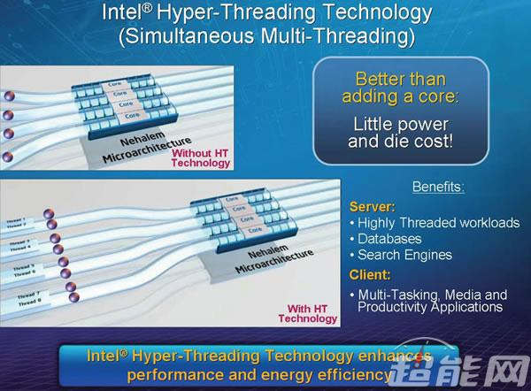
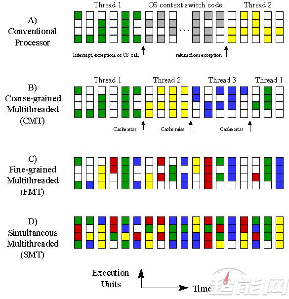
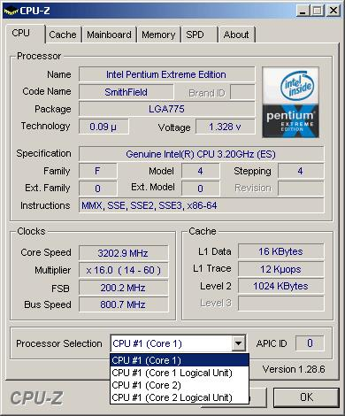

说到超线程技术，大家应该都不陌生了，Intel早在2002年推出的Northwood奔腾4 HT处理器就把这一技术带入到消费级市场。
虽然随后的酷睿2处理器上超线程被抛弃，不过到了2008年推出的Nehalem架构Core i7处理器又把超线程技术带回到市场上，并一直沿用至今。
现在的Core i7/i3、部分奔腾与Atom、还有移动版的双核Core i5与Core M处理器都有超线程技术。
AMD最新推出的Ryzen系列除最低端的Ryzen 3外都带有SMT多线程技术，与Intel的超线程技术类似。

在了解超线程是什么鬼之前我们要先知道线程是什么。
Thread线程是操作系统能够进行运算调动的最小单位，它被包含在进程之中，是进程中的实际运作单位，一个进程中可以并发多个线程，每条线程并行执行不同的任务。
Intel Hyper-Threading Technology（超线程技术）的学术名字是Simulate MultiThreading（SMT，同步多线程技术）。
SMT是超线程技术的学术名称，这两个东西是完全一样的。这技术的引入是为了更好的利用CPU的空闲资源。
Intel从奔腾处理器就开始引入超标量、乱序运行、大量的寄存器及寄存器重命名、多指令解码器、预测运行等特性，这些特性的原理是让CPU拥有大量资源，并可以预先运行及平行运行指令，以增加指令运行效率。
可是在现实中这些资源经常闲置，为了有效利用这些资源，就干脆再增加一些资源来运行第二个线程，让这些闲置资源可运行另一个线程。
什么是多线程？
MultiThreading多线程这个概念有些暧昧，多线程可以指在一个CPU核心上同时执行多个线程，也可以是多个任务，尽管在同一个核心内执行，但是它们之间完全分离。
多线程在概念上类似抢占式多任务处理，但是在现在的超标量处理器中以线程级来实现。
多线程有两个主要实现方法，一个是Temporal MultiThreading时间多线程，另一个则是Simulate MultiThreading同步多线程，时间多线程还可以进一步分为Fine-Grained MultiThreading细粒度多线程与Coarse-Grained MultiThreading粗粒度多线程。

各种多线程技术
CMT粗粒度多线程是最简单的多线程技术，当单一执行线程遇到长时间的延迟，如Cache Missed时，就进行线程切换，直到原线程等待的操作完成，才切换回去。
FMT细粒度多线程比CMT粗粒度多线程复杂一些，它随时可以在每个时钟周期内切换多个线程，以追求最大的输出能力，当然，随时可以切换也是有代价的，它拉长了每个执行线程的平均执行时间。
CMT和FMT都没有在消费级处理器上面使用，Intel与AMD处理器上使用的都是SMT同步多线程，不过NVIDIA与AMD的GPU都有使用FMT技术。
SMT同步多线程具有多个执行单元，CMT和FMT都是在单个执行单元下的技术，不同的线程在指令级别上并不是真正的“并行”，而SMT则具有多个执行单元，同一时间内可以同时执行多个指令，可以充分发掘超标量处理器的潜力，因此SMT具有最大的灵活性和资源利用率，不过处理器也更复杂。
不过现在的消费级处理器都是超标量处理器，所以要支持SMT其实在架构上不用太多改变：所需的主要添加是在一个周期中从多个线程获取指令的能力，以及一个更大的寄存器文件来保存来自多个线程的数据。
并发线程的数量可以由芯片设计者决定。常见模式是每个CPU核心有两个并发线程，但一些处理器的每个核心支持最多八个并发线程。
工作原理
对于单一处理器核心来说来说，虽然也可以每秒钟处理成千上万条指令，但是在某一时刻，只能够对一条指令(单个线程)进行处理，超线程技术能够把一个物理处理器在软件层变成两个逻辑处理器，可以使处理器在某一时刻，同步并行处理更多指令和数据(多个线程)，当然了实际效能不可实现双倍提升，毕竟干活的核心只有一个。

逻辑双核与物理双核
可以这样说，超线程是一种可以将CPU内部暂时闲置处理资源充分“调动”起来的技术，奔腾4 HT处理器多加入了一个逻辑处理单元，这让CPU可以同时执行多个程序而共享一颗CPU内的资源，如：ALU、FPU、缓存等，当两个线程都同时需要某一个资源时，其中一个要暂时停止，并让出资源，直到这些资源闲置后才能继续，因此超线程的性能并不等于两颗CPU的性能。

四个框框（双核四线程）的奔腾EE 840在单核还是绝对主流的2005年看起来就夸张
在发布奔腾4 HT处理器的时候Intel说过，超线程技术只增加了5%的芯片面积，就可换来15%~30%的性能提升，而后来的Nehalem架构带来了全新的超线程技术，得益于指令集分制预测技术与较短的流水线。
它拥有比奔腾4好得多的效能，再加上整合了内存控制器让其拥有更大的内存带宽，还有更大的缓存，这样就更能够有效的发挥超线程的作用。
Nehalem的超线程可以在增加很少能耗的情况下，让性能提升20-30%，后续每一代虽然都有一些小修改，不过基本上都是Nehalem架构的延续。
超线程的作用
其实在Intel刚把超线程技术推向消费级市场的时候市场反应不怎么好，因为当时的操作系统和软件都没有对多线程技术进行优化，多数软件都是以单线程运行，超线程的优势非但显露不出来反而会因为另一个虚拟处理器抢占资源导致运行起来比没超线程的处理器更慢。
这些问题随着这些年来操作系统和软件逐步对多核多线程进行优化得到改变，特别是Windows 10系统对多线程优化相当好，操作系统的调度器设置更为科学，多核心多线程的负载更为平均。
你在Windows 10系统下打开任务管理器会发现，不论物理核心还逻辑核心的负载都相当平衡，除非是人为指定负载线程，否则很少会出现之前Windows 7那样单核负载多核围观的惨状。

Windows 10下CPU的负载相当平均
至于超线程的作用其实还是很明显的，之前我们对比测试过Core i7-6700K和Core i5-7600K，他们俩的四核与单核Boost频率是相同的，都是4.0GHz与4.2GHz，区别就在于超线程的有无和L3缓存的大小了，至于Skylake与Kaby Lake两者是没有性能上的差别的。

有超线程的Core i7-6700K多线程性能比Core i5-7600K好19%左右，然而超线程技术在提升处理器的利用率增大吞吐量的同时也稍微增加了单个线程的延时，如果只看单线程能力的话Core i5-7600K其实比Core i7-6700K还好2.8%左右，然而降低这么一点单线程性能让多线程性能提升这么多这其实是很划算的。
太长不看版：
简单地说，超线程技术是一个很好的提升核心利用率的东西，将闲置处理资源充分调动起来，增强核心并行运算性能，在操作系统中一颗物理CPU能当做多颗CPU来使用。
超线程有什么好处呢：
－ 有效提升CPU利用率
－ 改善计算机的性能
－ 提高系统可靠性
比如奔腾G4560这种双核在拥有超线程之后性能暴增，在低端入门市场相对受欢迎，双核四线程的处理器能够对应大多数轻量级日常应用。
当然随着核心数目增多超线程的作用就越弱，特别是那些八核或者核心数更多的处理器，十六个框框看起来很爽然而实际上用起来很多线程都是空载的，大多数消费者与应用都没法很好的利用这么多线程的性能，目前只有视频和3D渲染软件和压缩软件有能做到，软件还是制约硬件性能的最大因素。
另外，超线程技术需要CPU支持，需要主板支持，需要操作系统支持，还需要应用软件支持，缺一不可，否则就玩不转了。